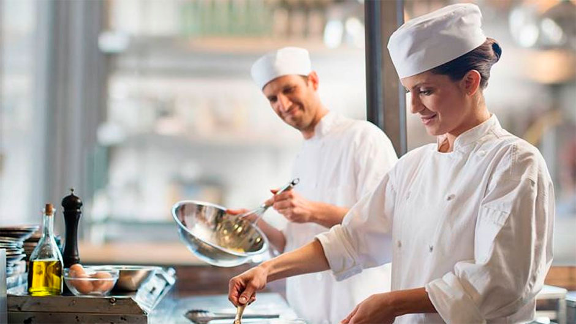
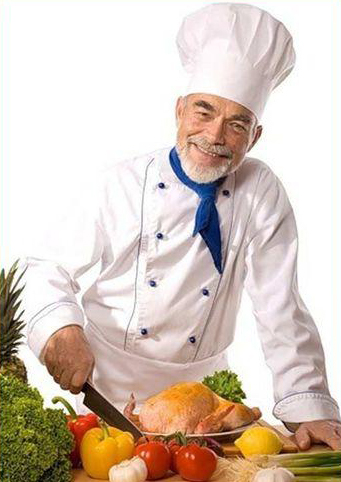

|  | ||
ПОВАРОМ БЫТЬ - СЕБЯ НЕ ЛЮБИТЬ!!! |
||
Профессия повар.Повар – это специалист, в чьи обязанности входит приготовление пищи. Помимо самого приготовления, повар отвечает за подготовку продуктов: проверить их на свежесть, помыть, порезать, почистить. Внешняя привлекательность блюда - тоже задача повара. Ведь в пище важен не только вкус, но и запах и аппетитный вид. Неудивительно, что профессия повара и кулинарное искусство зародилось вместе с первыми людьми на планете. Можно точно сказать, что с развитием государственности и в Древнем Египте, и в Древнем Китае должность повара для военных кампаний и для знатных приемов уже существовала. В первых письменных памятниках Вавилона, Египта, Китая и арабского Востока, наряду с описанием религиозных обрядов и военных походов, находятся и записи отдельных кулинарных рецептов. Греция и Рим были известны своими пирами и кулинарными изысками. При императорах Августе и Тиберии (около 400 года н.э.) в Риме появились первые кулинарные школы. А само слово "кулинария" произошло от латинского "кухня". Считается, что кулинарное искусство мало развивалось в Средневековье, по крайней мере, известно мало информации об изысканных блюдах. Стимулируют развитие кулинарного мастерства отсутствие войн и торговля с заморскими странами, то есть, доступность новых экзотических ингредиентов. Известно о кулинарных достижениях в средневековых монастырях, где монахам необходимо было разнообразить свое скудное меню и накормить братию, поэтому повара придумывали разнообразные рецепты из одних и тех же ингредиентов. Эти рецепты сохранились в монастырских библиотеках. С XIV века во Франции произошел подъем кулинарного искусства, и с тех пор национальные европейские кухни соперничают между собой. Сейчас трудно выделить какой-то один город в качестве гастрономической столицы мира. Повара Азии, Северной и Южной Америки тоже включились в кулинарную гонку. Например, сейчас наибольшее количество ресторанов со звездой Мишлен находится в японском Токио.n Хотите приготовить рыбу по древнегреческому рецепту? В рецепте из греческой энциклопедии II века н.э "Ономастикон" Юлия Поллукса рыбу сначала смешивали с крупой и топленым салом, сыром, желтками и мозгами, затем ее заворачивали фиговым листом, варили в бульоне из козленка и подавали в сосуде с кипящим медом. Это блюдо для ценителей высокой кухни. |
 | |
Плюсы и минусы профессии поварКажется, что может быть лучше: ты занимаешься интересным и творческим делом, и при этом делаешь что-то очень важное для людей – кормишь их. Кулинария – это жизненно необходимое искусство. Далеко не каждый вид искусства может этим похвастаться. Но давайте разберемся и в положительных и в отрицательных сторонах профессии повара. Плюсы работы поваром:
Минусы работы поваром:
|
||
|
Copyright © 2019 |
||